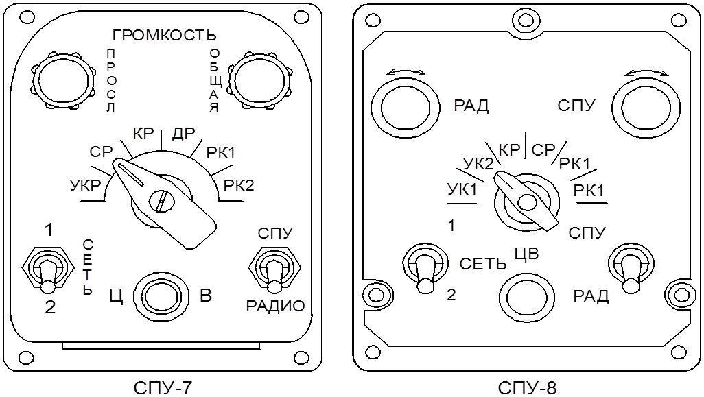

Системы внутрисамолетной связи (самолетные переговорные устройства). Самолетные громкоговорящие устройства
По принципу действия СПУ представляет собой радиоэлектронный усилитель речевых сигналов с устройствами коммутации и управления.
В состав комплекта СПУ входят 1–2 усилителя звуковой частоты, абонентские аппараты по числу членов экипажа, а также дополнительная комму-тирующая аппаратура. При работе СПУ используются также головные телефоны (обычно вмонтированные в шлемофон) и ларингофоны (микрофоны).
Усилитель СПУ предназначен для усиления слабых электрических сигналов, поступающих от ларингофонов, или сигналов, сопряженных с СПУ других самолетных устройств.
Абонентский аппарат СПУ представляет собой коммутирующее устройство, с помощью которого ларингофоны могут быть подключены к входу усилителя СПУ и передатчикам самолетных радиостанций, а телефоны к выходу усилителя СПУ или других бортовых радиоэлектронных устройств. На рис. 2. приведен внешний вид абонентских аппаратов из состава широко распространенных СПУ. СПУ-7 устанавливается на самолетах Ан-12, Ан-26, Ту-134, Ту-22М3, вертолетах Ми-8 и некоторых других. СПУ-8 устанавливается на Ил-62М, Ил-76, Ан-72 и вертолетах Ми-24, Ми-26.

Для ведения внутрисамолетной связи между членами экипажа (режим СПУ) ларингофоны передающего абонента через кнопку СПУ-РАДИО подключаются к входу усилителя СПУ, а телефоны остальных членов экипажа – к выходу усилителя. Для выхода членов экипажа на внешнюю связь через самолетные радиостанции (режим «Радио») к входам передатчиков их через кнопку СПУ-РАДИО абонентский аппарат и усилитель подключаются ларингофоны, а к выходам приемников – головные телефоны.
Для прослушивания сигналов от различных бортовых устройств телефоны членов экипажа через абонентские аппараты подключаются к выходам соответствующих устройств.
Экипажу через СПУ обычно подаются следующие звуковые сигналы:
• позывные телеграфные сигналы приводных аэродромных радиостанций или сообщения радиовещательных станций, принятые автоматическими радиокомпасами;
• позывные сигналы наземных радиомаяков радиотехнической системы ближней навигации, принятые самолетными приемниками РСБН;
• сигналы наземных маркерных радиомаяков, принятые бортовым маркерным радиоприемником;
• сигналы радиовысотомера малых высот, предупреждающие экипаж о снижении самолета ниже установленной высоты;
• сигналы станции предупреждения об облучении, информирующие экипаж самолета об облучении его радиолокационными станциями перехвата, прицеливания и самонаведения;
• разовые команды речевых информаторов, предупреждающие экипаж о появлении отказов авиационной техники или некоторых недопустимых явлений.
С целью обеспечения высокой надежности связи на самолете обычно имеется две независимых сети связи, а в комплект СПУ входит два усилителя.
Самолетные громкоговорящие устройства (СГУ)
Самолетные громкоговорящие устройства (СГУ) предназначены для речевого оповещения личного состава, находящегося в грузовой кабине при выполнении загрузки и десантировании.
Самолётные громкоговорящие устройства (СГУ) предназначены для оповещения пассажиров и трансляции музыкальных передач в салон ВС.
Кроме этого СГУ обеспечивают выход на внешнюю радиосвязь и ведение двухсторонней внутренней телефонной связи при совместной работе с самолётными переговорными устройствами, то есть пилоты кроме оповещения пассажиров могут вести 2-х стороннюю телефонную связь с бортпроводниками, прослушивать сигналы внешней и внутренней связи через авиационные гарнитуры и громкоговорители.
В основной состав комплекта СГУ устанавливаемых на ВС входит:
- два усилителя сигналов (маломощный узкополосный усилитель - мощностью 2 Вт, с диапазоном усиливаемых частот 0,3…3 кГц и широкополосный усилитель большой мощности 15…25 Вт, с диапазоном усиливаемых частот 0,2…8 кГц);
- щитки управления пилота, штурмана и бортпроводника (для подключения микрофона, авиа гарнитур и маломощного усилителя к различным средствам внешней и внутренней связи);
- микрофоны пилота, штурмана и бортпроводника;
- динамические громкоговорители.